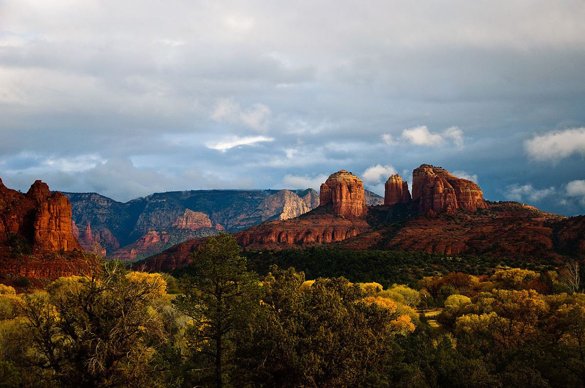

Добро пожаловать в Седону!
В
История города Седона берёт своё начало с конца 19 века. Именно в 1876 году сюда прибыли первые жители. Им сопротивлялись индейские племена, которые считали эти места священными. Природа здесь не сопутствовала жизни, и к 1900 году здесь обитали всего 20 семей фермеров.
В 1902 году
В этих местах никогда не было своих рек и водоёмов, однако в послевоенные годы здешние земли исследовал геолог Карл Е. Виллиамс. Он то и обнаружил на глубине 500 футов подземные воды, благодаря которым и возник здешний оазис.
Настоящей достопримечательностью является необыкновенный каньон
Седона, как и Марс, покрыта красным песком и красными скалами.
Город знаменит своими аномальными явлениями. Говорят, что частота появлений НЛО в этой местности столь высока, что едва ли не каждый второй житель Седоны имеет опыт наблюдения «летающей тарелки.
Местные турагенства предлагают ночные туры для наблюдения за НЛО. Предполагают, что в 15 км. от Седоны находится аномалия, где можно видеть самые разнообразные удивительные явления, вплоть до порталов в другие миры.
В общем, если вы будете находиться в американском штате Колорадо, то сюда однозначно стоит заглянуть. Даже если вы не сможете увидеть НЛО, то вдоволь налюбуетесь местными окружающими пейзажами.
Добро пожаловать в Седону!